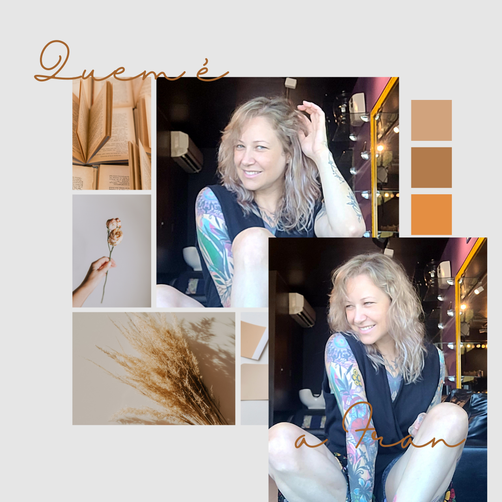

Fran Andrade

A Fran é uma estudante de Marketing e Desenvolvimento Web
Brasileira, pernambucana, mulher, mãe de um garoto de 17 anos e apaixonada por aprender coisas novas.
Tenho 35 anos e quero viver muitas coisas ainda na vida, afinal, ela só começou.
Gosto de ler, assistir series e ver a vida marinha se tornou uma paixão latente desde 2018.